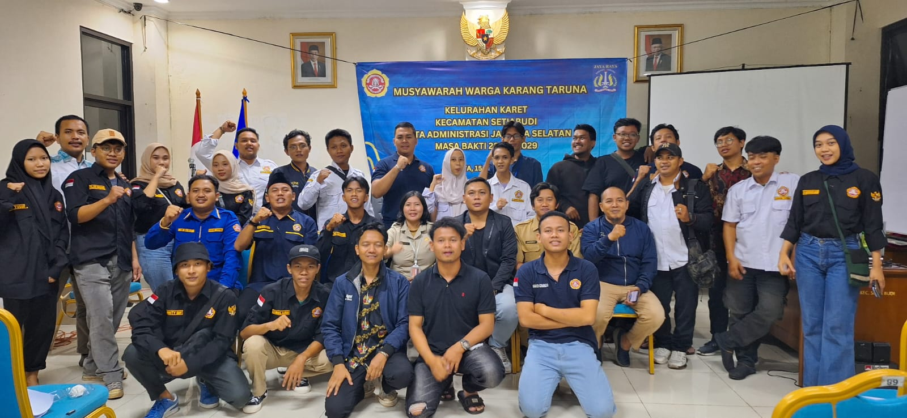
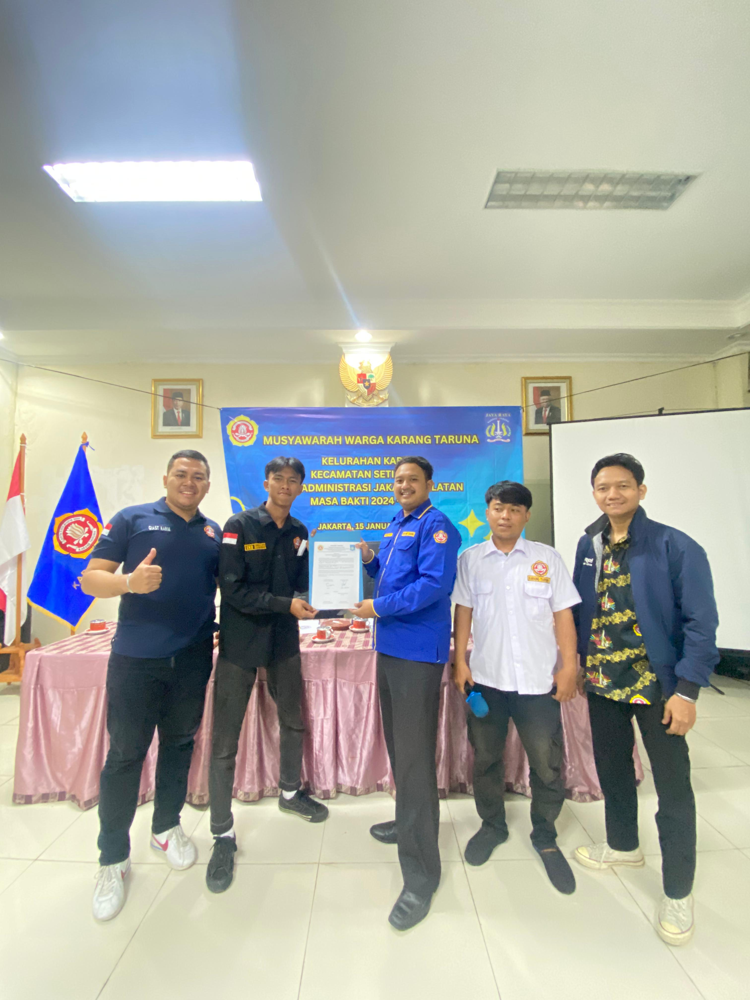

Musyawarah Warga Karang Taruna Kelurahan Karet
Karang Taruna Kelurahan Karet Gelar Musyawarah Warga Karang Taruna Kelurahan Karet pada Senin, 15 Januari 2023 di Aula Lantai 2 Kantor Kelurahan Karet, Kecamatan Setiabudi, Kota Administrasi Jakarta Selatan.

Kegiatan Musyawarah Warga Karang Taruna (MWKT) bertujuan untuk membentuk Struktur Karang Taruna Kelurahan Karet baru dan sosialisasi tentang PERMENSOS 25 Tahun 2019. Kegiatan ini dihadiri oleh Kasipem Kelurahan Karet, Kasi Kesra Kelurahan Karet, Ketua Karang Taruna Kota Adm Jakarta Selatan, Pengurus Karang Taruna Kecamatan Setiabudi, Pengurus Karang Taruna Kelurahan Karet, Ketua LMK Kelurahan Karet, Ketua RW di Kelurahan Karet (RW.01-07), dan perwakilan dari masing-masing Karang Taruna tingkat Unit (RW.01-07).
Sambutan
Kegiatan Musyawarah Warga Karang Taruna (MWKT) dipimpin oleh Sekretaris Karang Taruna Kelurahan Karet (Sutejo) selaku Ketua Pelaksana. Acara dimulai dengan pembacaan Al-Qur'an sekaligus Doa, kemudian diikuti dengan sambutan dari Ketua Karang Taruna Kelurahan Karet (Khomaini Malak). Dilanjutkan dengan sambutan dari Lurah Karet yang diwakili oleh Kasi Pem Kelurahan Karet (Bpk Bayu), dan Kasi Kesra Kelurahan Karet (Ibu Nancy), lalu dilanjutkan sambutan oleh Ketua Karang Taruna Kecamatan (Bpk Sukron Hamdi). Terakhir, sambutan khusus dari Ketua Karang Taruna Kota Administrasi Jakarta Selatan (Muhammad Lutfi Arwies, SH), beliau menyampaikan beberapa arahan terkait pelaksanaan sidang pemilihan Ketua Karang Taruna Kelurahan Karet.
Proses Pemilihan
Sebelum dimulai perhitungan suara untuk pemilihan Ketua Karang Taruna Kelurahan Karet, Khomaini Malak selaku Ketua Karang Taruna Kelurahan Karet memberikan Laporan Pertanggung Jawaban Pengurus Karang Taruna Kelurahan Karet Masa Bakti Tahun 2020-2023 secara simbolis.
Proses dan aturan pemilihan kemudian diberikan kepada masing-masing perwakilan Karang Taruna tingkat Unit RW.
Jumlah suara dalam pemilihan ini sebanyak 8 Suara yaitu dengan rincian sebagai berikut:
- 6 Suara berasal dari Karang Taruna Unit RW
- 1 dari Karang Taruna Kecamatan Setiabudi
- 1 dari Karang Taruna Kelurahan Karet
Pada pemilihan Ketua Karang Taruna Kelurahan Karet untuk Periode Masa Bakti Tahun 2023-2028 ini, terdapat 2 kandidat yang mencalonkan diri untuk melanjutkan kinerja dan memberikan inovasi baru di Karang Taruna Kelurahan Karet. Kandidat yang mencalonkan diantaranya yaitu Ketua Karang Taruna Unit RW.05 (Makarim Putra Abdi) atau yang biasa disapa dengan sebutan "Giast" dan yang kedua dari Karang Taruna Unit RW.01 (Eko Saputro). Para kandidat menyampaikan Visi & Misi-nya untuk meyakinkan para perwakilan dari Karang Taruna Unit RW di Kelurahan Karet sebelum dimulainya pemilihan suara.
Pemilihan berlangsung dengan masing-masing perwakilan dari Karang Taruna Unit RW maju satu persatu untuk menuliskan namanya di kertas kecil dan kemudian kertas tersebut dikumpulkan dan dihitung suaranya satu persatu. Perolehan suara akhir mendapatkan skor 3 poin untuk Ketua Karang Taruna Unit RW.05 (Makarim Putra Abdi) dan 5 poin kemenangan untuk Karang Taruna Unit RW.01 (Eko Saputro).

Penutup
Setelah menjadi kandidat terpilih, Eko Saputro memberikan sambutan kepada para seluruh partisipan yang menghadiri Musyawarah Warga Karang Taruna (MWKT) Kelurahan Karet. Acara berakhir ditutup dengan penyerahan ATK & Inventaris dan penandatanganan Berita Acara oleh Pengurus Karang Taruna Kelurahan Karet (Khomaini Malak & Sutejo) kepada Pengurus Karang Taruna Kelurahan Karet Masa Bakti Tahun 2023-2028 (Eko Saputro). Tidak lupa juga, sesi foto bersama menjadi penutup kegiatan Musyawarah Warga Karang Taruna (MWKT) Kelurahan Karet ini.
Kami mengucapkan selamat bertugas kepada kandidat terpilih yakni Eko Saputra sebagai Ketua Karang Taruna Kelurahan Karet Masa Bakti Periode Tahun 2023-2028.
Disclaimer:
Segala bentuk data atau informasi yang disiarkan oleh Karang Taruna Unit RW.05 adalah hasil riset, pembuatan, pengolahan data dari sumber terverifikasi yang dilakukan oleh Karang Taruna Unit RW.05. Setiap pemberitaan yang dilakukan pada web ini diupayakan memenuhi akurasi, detail dan sesuai dengan peraturan perundang-undangan yang berlaku. Setiap pengutipan, penggunaan, penggandaan, kesalahan penulisan, keterlambatan pembaharuan data dan sejenisnya pada web ini bukan menjadi tanggung jawab kami. Namun kami menerima kritik dan saran sebagai bentuk upaya kami untuk terus meningkatkan dan memberikan pelayanan yang lebih baik.